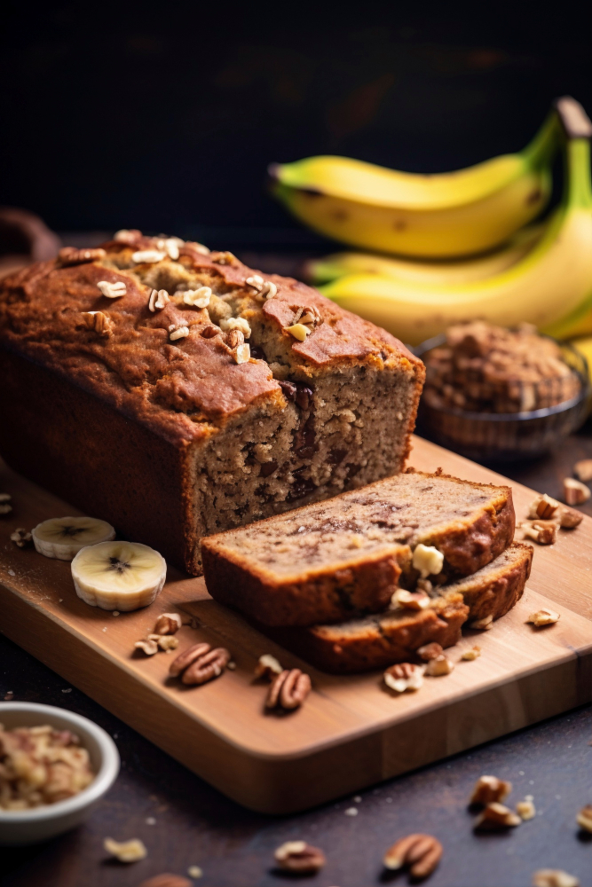

Banana Bread

Description
Banana bread is a sweet, moist quick bread or cake made with mashed bananas. It's known for its soft, tender crumb and rich banana flavor, often with hints of cinnamon and brown sugar. Many recipes incorporate nuts, chocolate chips, or other dried fruits, and it's a popular way to use up ripe bananas.
Ingredients
- 1 cup white sugar
- ½ cup margarine, softened
- 2 eggs
- 1 ½ cups mashed banana
- 2 cups all-purpose flour
- 1 teaspoon baking soda
Steps
- Preheat the oven to 350 degrees F (175 degrees C). Grease and flour a 9x5-inch loaf pan.
- Beat sugar and margarine in a bowl until smooth. Beat in eggs, then bananas. Add flour and baking soda, stirring just until combined. Pour into the prepared pan.
- Bake in the preheated oven until a toothpick in the center comes out clean, about 1 hour. Remove from the pan and let cool.
- Store in the refrigerator or freeze.
Home